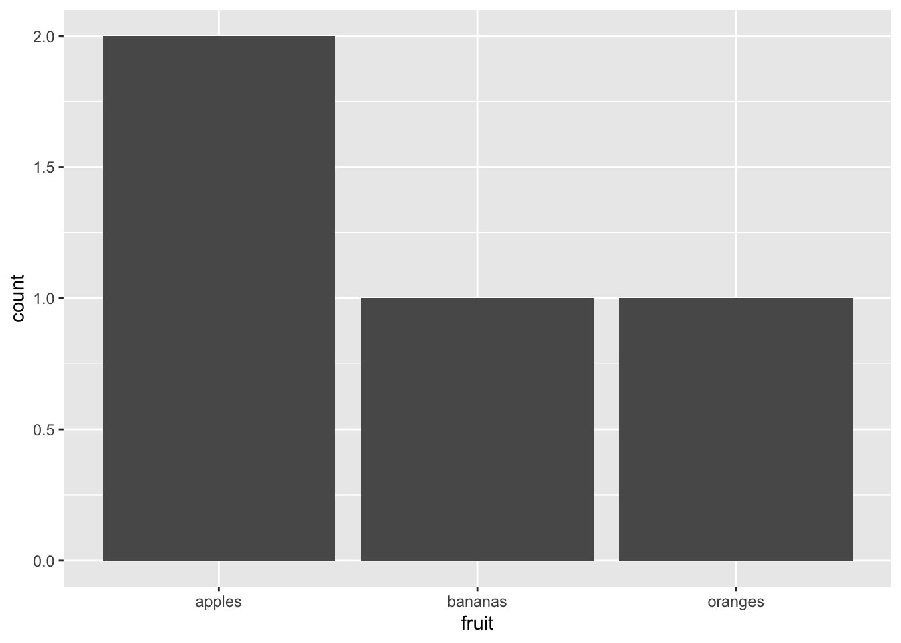
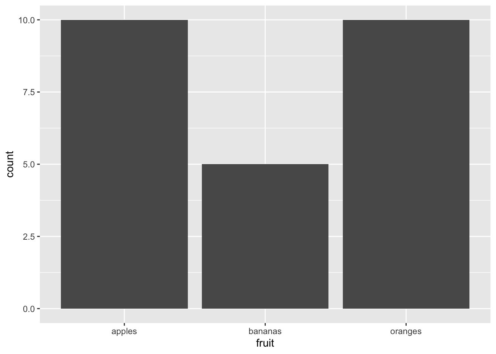
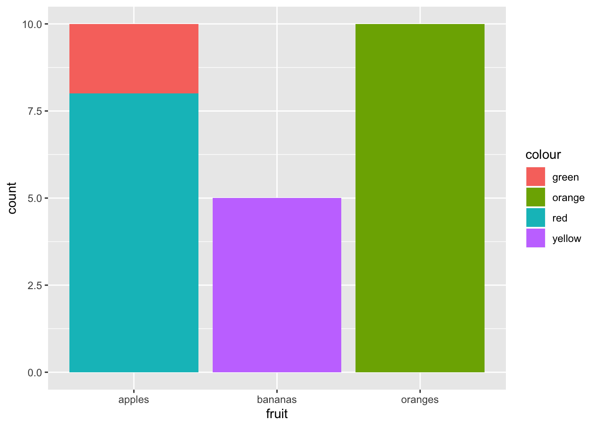
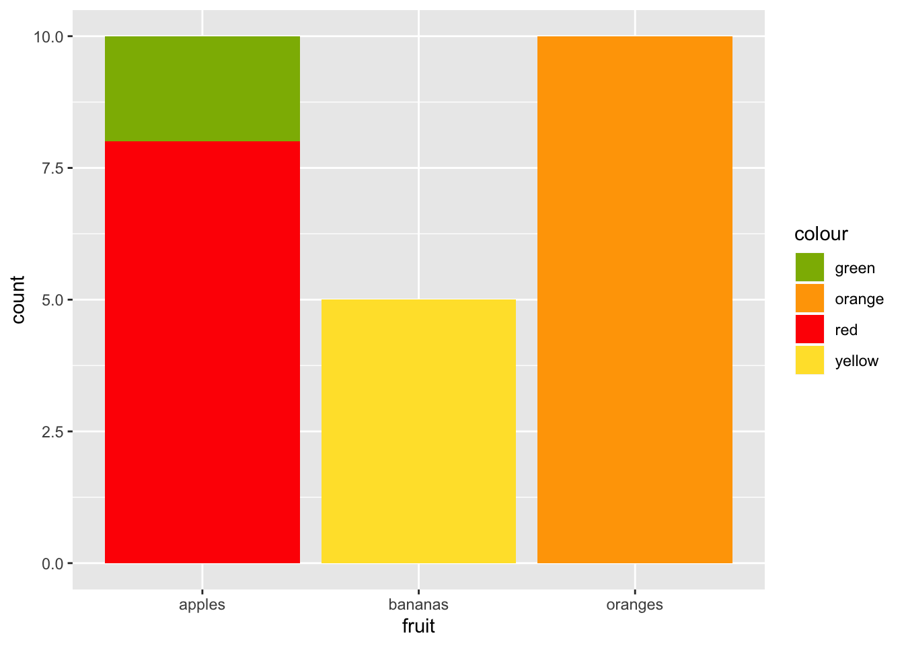
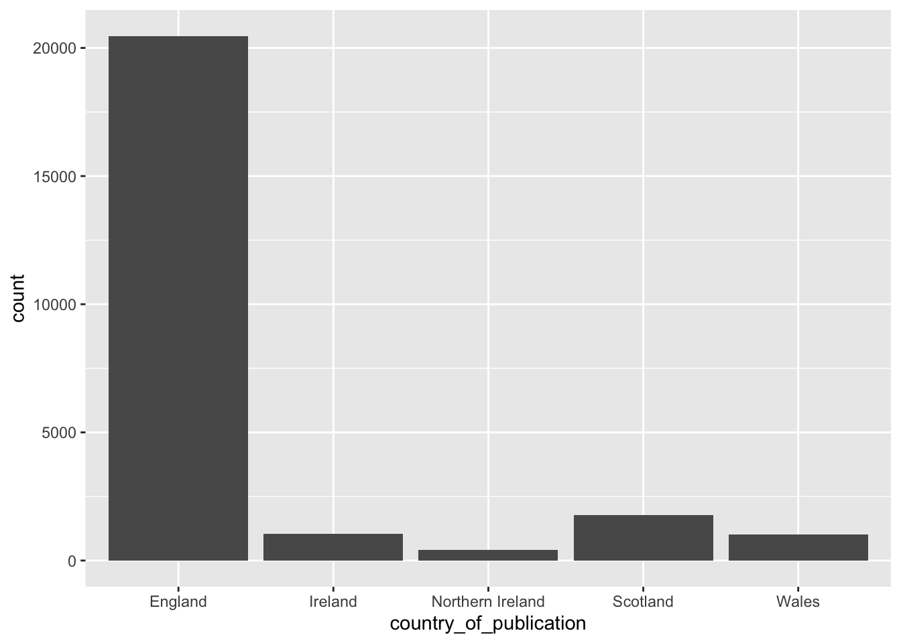

9 R and the Tidyverse
The motivation behind this book was to provide a way to access and analyse newspaper data using a programming language that I am familiar with. The reason is simple: you write what you know, and I know R best. With its interface, R-Studio, I think it has the easiest transition from someone used to spreadsheet programs, and you’ll realise that most of what you do is filter, sort, count and select columns in a data format called a dataframe.
A dataframe is basically a spreadsheet - it contains rows with observations, and columns with variables. Each row is generally a thing, for want of a better word. A thing that wants to be counted, either by summarising it as a more general thing, or turning it into something else and then counting it, or removing some of the things first and then counting the leftovers. For us, the thing might be a record of a newspaper title, or a newspaper article (and its text), or it might be a single word.
You can do a lot more cool things with a thing in a dataframe. A thing might be a single polygon, in a huge dataframe of polygons or lines, all of which add up to a map, which we can then count, sort, filter and eventually draw.
While I want this book to stand alone, it’s not meant to function as a tutorial, but rather I will try to explain just enough to do the analysis seen in this book.
9.1 R
R has been around for a while. It’s a good programming language for data analysis and plotting, and it is relatively easy to create nice-looking plots.
9.1.1 Base R commands
I don’t use them very much, but R does have a bunch of very well-developed commands for doing the sorting, filtering and counting mentioned above. If you want to learn base R, I recommend the following:
It is worth understanding the main types of data that you’ll come across, in your environment window. First, you’ll have dataframes. These are the spreadsheet-like objects which you’ll use in most analyses. They have rows and columns.
Next are variables. A variable is assigned to a name, and then used for various purposes.
You’ll often here of something called a vector. A vector is like a python list. It’s sort of like a single column in a dataframe (spreadsheet), a 2D dataframe. It can have different types: for example, a character vector looks like this c("apples", "bananas", "oranges")
A dataframe is just a bunch of vectors side by side.
fruit = c("apples", "bananas", "oranges", "apples")
colour = c("green", "yellow", "orange", "red")
amount = c(2,5,10,8)## fruit colour amount
## 1 apples green 2
## 2 bananas yellow 5
## 3 oranges orange 10
## 4 apples red 8Notice above that the third column, the amount, has
Anyway, that’s a dataframe.
9.1.2 R studio
R studio is an IDE. It’s unusual in that it’s very self-contained and ubiqutous. One of the attractions for R when I began, was that it seemed so much less confusing than Python, which has many different ways of accessing it. While you can use R in many ways too, R-Studio seems much more of a ‘catch-all’ that appeals to everyone. It’s available here: [link]
It has four main windows: you’ll type your code in the top left, your environments are on the right (it lists your dataframes, variables and so forth. The bottom right contains the files in your project folder, as well as some other tabs showing plots and help.The bottom left shows the console - that’s where everything you do is sent and where it is acted on by R.
The help screen is particularly useful. Typing ? followed by a function brings up a screen explaining the function on the bottom right panel. So typing: ?data.frame() into the R console will display a screen containing information on a function and its various options.
into
9.2 Tidyverse
Most of the work in this book is done using a set of packages developed for R called the ‘tidyverse’. These enhance and improve a large range of R functions, with much nice syntax - and they’re faster too. It’s really a bunch of individual packages for sorting, filtering and plotting data frames. They can be divided into a number of diferent categories.
They all work in the same way. The first argument is the thing you want to operate on. This is nearly always a data frame. After come other arguments, which are often specific columns, or certain variables you want to do something with.
9.2.1 Select, pull
select() allows you to select columns. You can use names or numbers to pick the columns, and you can use a - sign to select everything but a given column.
Using the fruit data frame we created above: We can select just the fruit and colour columns:
## fruit colour
## 1 apples green
## 2 bananas yellow
## 3 oranges orange
## 4 apples redSelect everything but the colour column:
## fruit amount
## 1 apples 2
## 2 bananas 5
## 3 oranges 10
## 4 apples 8Select the first two columns:
## fruit colour
## 1 apples green
## 2 bananas yellow
## 3 oranges orange
## 4 apples red9.2.2 group_by, tally, summarise
The next group of functions group things together and count them. Sounds boring but you would be amazed by how much of data science just seems to be doing those two things in various combinations.
group_by() puts rows with the same variable in a column of your dataframe into a group. Once they’re in a group, you can count them or summarise them by another variable.
First you need to create a new dataframe with the grouped fruit.
Next we use tally(). This counts all the instances of each fruit group.
## # A tibble: 3 x 2
## fruit n
## <chr> <int>
## 1 apples 2
## 2 bananas 1
## 3 oranges 1See? Now the apples are grouped together rather than being two separate rows, and there’s a new column called n, which contains the result of the count.
If we specify that we want to count by something else, we can add that in as a ‘weight’, by adding wt = as an argument in the function.
## # A tibble: 3 x 2
## fruit n
## <chr> <dbl>
## 1 apples 10
## 2 bananas 5
## 3 oranges 10That counts the amounts of each fruit, ignoring the colour.
9.2.3 filter
Another quite obviously useful function. This filters the dataframe based on a condition which you set within the function.
Just red fruit:
## fruit colour amount
## 1 apples red 8Just fruit with at least 5 pieces:
## fruit colour amount
## 1 bananas yellow 5
## 2 oranges orange 10
## 3 apples red 89.2.4 sort, arrange, top_n
Another useful set of functions, often you want to sort things. The function arrange() does this very nicely. You specify the data frame, and the variable you would like to sort by.
## fruit colour amount
## 1 apples green 2
## 2 bananas yellow 5
## 3 apples red 8
## 4 oranges orange 10Sorting is ascending by default, but you can specify descending using desc():
## fruit colour amount
## 1 oranges orange 10
## 2 apples red 8
## 3 bananas yellow 5
## 4 apples green 2If you `sortarrange() by a list of characters, you’ll get alphabetical order:
## fruit colour amount
## 1 apples green 2
## 2 apples red 8
## 3 bananas yellow 5
## 4 oranges orange 10You can sort by multiple things:
## fruit colour amount
## 1 apples red 8
## 2 apples green 2
## 3 bananas yellow 5
## 4 oranges orange 10Notice that now red apples are first.
9.2.5 Piping
Another great feature of the tidyverse is that you can ‘pipe’ commands through a bunch of functions. This means that you can do one operate, and pass the result to another operation. The previous dataframe is passed as the first argument of the next function by using the pipe %>% command. It works like this:
fruit_data %>%
filter(colour != 'yellow') %>%
group_by(fruit) %>%
tally(amount) %>%
arrange(desc(n))## # A tibble: 2 x 2
## fruit n
## <chr> <dbl>
## 1 apples 10
## 2 oranges 10That code block, written in prose: “take fruit data, remove any yellow colour fruit, count the fruits by type and amount, and arrange in descending order of the total”
9.2.6 Plotting
The tidyverse includes a pretty amazing plotting library called ggplot2. This is used by piping your dataframe to a function called ggplot(). It’s too much to go into now, but the basic idea is that you add your data, then you can add plot elements which are called geoms. Some common ones are geom_line(), geom_bar and geom_point. To the geom function you add aesthetics, which is basically telling the function which bits of your data should be responsible for which parts of the visualisation. These are added using aes(). I’ll explain a bit more about some in other parts of this book.
As an example:
Bar chart of different types of fruit (one each of bananas and oranges, two types of apple)
 Counting the total amount of fruit:

Charting amounts and fruit colours:

And just because it annoys me having random colours, we can map them to the actual colours:
fruit_data %>%
ggplot() +
geom_bar(aes(x = fruit, weight = amount, fill = colour)) +
scale_fill_manual(values = c("orange" = "orange",
"green" = "#8db600",
"red" = "#ff0800",
"yellow" = "#ffe135"))
9.2.7 Doing this with newspaper data
Who cares about fruit? Nobody, that’s who. We want newspaper data! Let’s load a dataset of metadata for all the titles held by the library, and do some counting and sorting.
Download from here: British Library Research Repository
You would need to extract into your project folder first, if you’re following along at home:
read_csv reads the csv from file.
## Parsed with column specification:
## cols(
## .default = col_character(),
## title_id = col_double(),
## nid = col_double(),
## nlp = col_double(),
## first_date_held = col_double(),
## publication_date_one = col_double(),
## publication_date_two = col_double()
## )## See spec(...) for full column specifications.Select some particularly relevant columns:
## # A tibble: 24,927 x 4
## publication_title first_date_held last_date_held country_of_publi…
## <chr> <dbl> <chr> <chr>
## 1 Corante, or, Newes from Ita… 1621 1621 The Netherlands
## 2 Corante, or, Newes from Ita… 1621 1621 The Netherlands
## 3 Corante, or, Newes from Ita… 1621 1621 The Netherlands
## 4 Corante, or, Newes from Ita… 1621 1621 England
## 5 Courant Newes out of Italy,… 1621 1621 The Netherlands
## 6 "A Relation of the late Occ… 1622 1622 England
## 7 "A Relation of the late Occ… 1622 1622 England
## 8 "A Relation of the late Occ… 1622 1622 England
## 9 "A Relation of the late Occ… 1622 1622 England
## 10 "A Relation of the late Occ… 1622 1622 England
## # … with 24,917 more rowsArrange in order of the latest date of publication, and then by the first date of publication:
title_list %>%
select(publication_title,
first_date_held,
last_date_held,
country_of_publication) %>%
arrange(desc(last_date_held), first_date_held)## # A tibble: 24,927 x 4
## publication_title first_date_held last_date_held country_of_publi…
## <chr> <dbl> <chr> <chr>
## 1 Shrewsbury chronicle 1773 Continuing England
## 2 London times|The Times|Time… 1788 Continuing England
## 3 Observer (London)|Observer … 1791 Continuing England
## 4 Limerick chronicle 1800 Continuing Ireland
## 5 Hampshire chronicle|The Ham… 1816 Continuing England
## 6 The Inverness Courier, and … 1817 Continuing Scotland
## 7 Sunday times (London)|Sunda… 1822 Continuing England
## 8 The Impartial Reporter, etc 1825 Continuing Northern Ireland
## 9 Impartial reporter and farm… 1825 Continuing Northern Ireland
## 10 Aberdeen observer 1829 Continuing Scotland
## # … with 24,917 more rowsGroup and count by country of publication:
title_list %>%
select(publication_title,
first_date_held,
last_date_held,
country_of_publication) %>%
arrange(desc(last_date_held)) %>%
group_by(country_of_publication) %>%
tally()## # A tibble: 40 x 2
## country_of_publication n
## <chr> <int>
## 1 Bermuda Islands 24
## 2 Cayman Islands 1
## 3 England 20465
## 4 England|Hong Kong 1
## 5 England|India 2
## 6 England|Iran 2
## 7 England|Ireland 10
## 8 England|Ireland|Northern Ireland 10
## 9 England|Jamaica 7
## 10 England|Malta 2
## # … with 30 more rowsArrange again, this time in descending order of number of titles for each country:
title_list %>%
select(publication_title,
first_date_held,
last_date_held,
country_of_publication) %>%
arrange(desc(last_date_held)) %>%
group_by(country_of_publication) %>%
tally() %>%
arrange(desc(n))## # A tibble: 40 x 2
## country_of_publication n
## <chr> <int>
## 1 England 20465
## 2 Scotland 1778
## 3 Ireland 1050
## 4 Wales 1019
## 5 Northern Ireland 415
## 6 England|Wales 58
## 7 Bermuda Islands 24
## 8 England|Scotland 13
## 9 England|Ireland 10
## 10 England|Ireland|Northern Ireland 10
## # … with 30 more rowsFilter only those with more than 100 titles:
title_list %>%
select(publication_title,
first_date_held,
last_date_held,
country_of_publication) %>%
arrange(desc(last_date_held)) %>%
group_by(country_of_publication) %>%
tally() %>%
arrange(desc(n)) %>%
filter(n>=100)## # A tibble: 5 x 2
## country_of_publication n
## <chr> <int>
## 1 England 20465
## 2 Scotland 1778
## 3 Ireland 1050
## 4 Wales 1019
## 5 Northern Ireland 415Make a simple bar chart:
title_list %>%
select(publication_title,
first_date_held,
last_date_held,
country_of_publication) %>%
arrange(desc(last_date_held)) %>%
group_by(country_of_publication) %>%
tally() %>%
arrange(desc(n)) %>%
filter(n>=100) %>%
ggplot() +
geom_bar(aes(x = country_of_publication, weight = n))
9.2.8 Other relevant stuff, particularly for historians
9.2.8.1 Dealing with dates
9.2.8.2 Maps/coordinates
This will be mostly pointing at other resources, aim mainly to point out that R can do mapping well.
9.2.8.3 Other relevant functions
So that’s a very quick introduction to R. There’s loads of places to learn more.
The Pirate’s Guide to R, a good beginners guide to base R